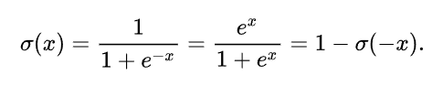
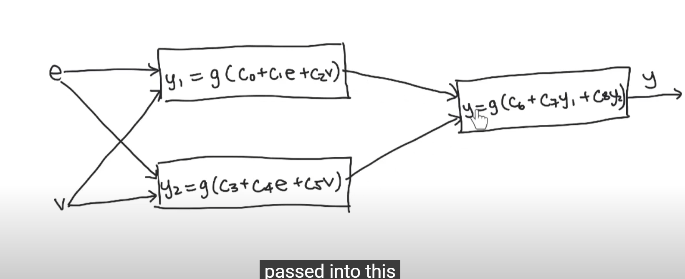

🤖 AI基礎理論知識 解密YT演算法!
現在人工智慧是非常火熱的話題，今天就來帶大家簡單的認識一下AI吧~
先從最簡單的開始介紹
Linear Regression
當我們可以用簡單的一條線大概的抓到輸入與輸出的關係，那我們就可以使用這個方法。他的數學公式大概像：
y = b₀ + b₁x₁ + b₂x₂ + ... + bₙxₙy是輸出，x則是各個輸入。
AI做了什麼呢?
AI在這裡做的事你給他大量的y和x資料，而AI會自動去推算出各個b可能的值。而隨著你餵它的資料越來越多，它推算出來的b會越加準確!
這個方法適用於簡單的問題，例如:房子的坪數、房齡、距離捷運站的距離 和 房價的關係。也就是你可以看見簡單的線性關係的問題!
像剛剛的例子: 房子的坪數、房齡、距離捷運站的距離 都和最終房價可能有一定的關係。而當AI推算出可能的b之後 你把房子的坪數、房齡、距離捷運站的距離輸入進去，就可以推測出可能的房價。
Logistic Regression
再來呢~ 是關於可能性的問題!讓AI去預測某個東西的可能性大概多少，0是完全不可能1是最有可能。他的公式呢基本上跟上面一樣，但是他多了一個東西叫做sigmoid function這個function的作用就是把結果限縮在0~1這個範圍之中。
讓我們來看看：

把整個y帶進去sigmoid就可以得到被限縮在0~1的一個值。這個的用途最常見的例子就是垃圾郵件判斷，餵給他一堆的垃圾郵件和正常郵件，垃圾郵件標記:1 正常標記:0。這樣之後你給他一封信AI就能夠大概估出可能是垃圾郵件的機率!
神經網路? 那啥?
你一定聽過神經網路這個詞超多次了吧!今天就來告訴你那是啥!其實就是像下圖這樣把一堆公式"串起來" (通常會比這複雜很多啦，就是一大坨串在一起。然後好幾層!)

這個時候AI要找出來的係數就會變得更加複雜，而輸入和輸出也可能沒有直接的線性關係。例如:影片推薦的演算法
這些是 Netflix、YouTube、Spotify 現在用的主流
(A) 嵌入向量 (Embedding)
- 使用者：把一個人（看過的影片、偏好）轉成一個向量 (例如 128 維度)
- 影片：把影片的資訊（標籤、標題、語意）轉成一個向量
- → 這些向量放到一個「高維空間」裡，越相近 = 越可能喜歡
(B) 神經網路學習
- 神經網路會學一個函數 f(user, video) → 輸出「喜歡的機率」
- 這裡會有很多參數（weights、bias），用 反向傳播 + 梯度下降 訓練 (反向傳播:就是如果推薦不準確，那AI就會在神經網路裡面一層一層往回推去看要怎麼調整。 而梯度下降就是假如你沒點某個影片，YOUTUBE就走心。把它往這部影片維度距離移太遠，但其實使用者可能只是這時候不想看，或不小心沒看到這部。移的太猛導致推薦失準，所以要讓偏移量下降，或調整到適合的大小。阿如果你一直重複觀看一直按讚那它就會往那個影片的方向提升多一點!)
- 損失函數常用 binary cross entropy，也就是「看過的影片 = 1，沒看過的 = 0」(也就是你沒點進去看的AI就會給它稍微扣分，他會稍微降低這個方向的內容。而當然如果你點倒讚之類的，就會給它大扣分!判定你可能不喜歡~ 此外:觀看時間、重播次數 也會是判斷的依據)
(C) 大量資料的必要性
- 因為神經網路參數很多（可能上百萬甚至上億），如果資料不夠，就容易 overfit（記住訓練資料，但學不到泛化規則）
- YouTube 每天幾十億次觀看，Netflix 幾億用戶 → 這就是為什麼他們能用超大 NN。
好啦~以上就是今天的文章啦。希望大家有更加理解AI，有問題Mail我吧~!!! 掰掰!
參考影片: 點我